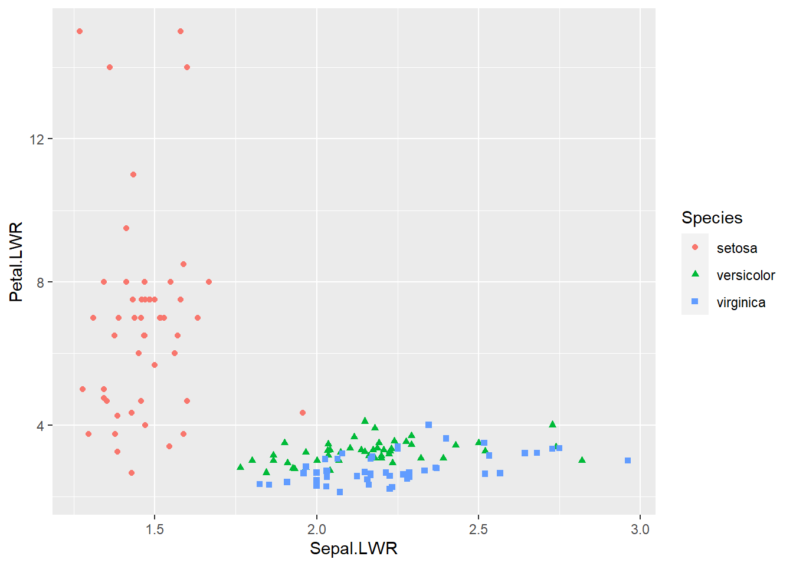

データを分析するにあたり、絞り込み、列の追加・削除、集計などデータフレームの操作が必要になることが多いです。このようなデータ操作にはdplyrパッケージを利用すると便利です。
dplyrを利用するにはまずdplyrパッケージのインストールと読み込みを行ってください。
install.packages("dplyr")
library(dplyr)dplyrパッケージを使いこなすには、パイプ演算子%>%が不可欠です。 パイプ演算子%>%は、演算子の左にあるオブジェクトを、演算子の右にある関数の第1引数へと挿入します。 たとえば次のコードは、iris（アヤメのデータ）の先頭5行を表示するのにパイプ演算子%>%を利用しています。
# irisデータの先頭5行を表示
iris %>% head(5) # head(iris,5)と同じ## Sepal.Length Sepal.Width Petal.Length Petal.Width Species
## 1 5.1 3.5 1.4 0.2 setosa
## 2 4.9 3.0 1.4 0.2 setosa
## 3 4.7 3.2 1.3 0.2 setosa
## 4 4.6 3.1 1.5 0.2 setosa
## 5 5.0 3.6 1.4 0.2 setosa上の例ではパイプ演算子%>%の良さが分かりづらいですが、これから紹介するdplyrパッケージの関数はいずれもデータフレームを第1引数に取った上で加工後のデータフレームを返す関数となっているため、以下の形式で連鎖的にデータフレームを操作することができます。
なお、加工した最終結果をオブジェクトに保存したい場合は、1行目を「オブジェクト名 = データフレーム %>%」としてください。
これから紹介する関数の使用例を通じてパイプ演算子%>%の威力を感じていただけたらと思います。
まずは、データフレームの行をある列（変数）の昇順あるいは降順に並べ替えたいときには、arrange関数を用います。
昇順のソート：データフレーム %>% arrange(列名)
降順のソート：データフレーム %>% arrange(desc(列名))
複数列でのソート：データフレーム %>% arrange(列名1, 列名2,…)
例として、irisデータをSepal.Length(がく片の長さ)でソートしてからその先頭5行を表示します。
# 昇順ソートして先頭5行を表示
iris %>% arrange(Sepal.Length) %>% head(5) # head(arrange(iris,Sepal.Length),5)と同じ## Sepal.Length Sepal.Width Petal.Length Petal.Width Species
## 1 4.3 3.0 1.1 0.1 setosa
## 2 4.4 2.9 1.4 0.2 setosa
## 3 4.4 3.0 1.3 0.2 setosa
## 4 4.4 3.2 1.3 0.2 setosa
## 5 4.5 2.3 1.3 0.3 setosa# 降順ソートして先頭5行を表示
iris %>% arrange(desc(Sepal.Length)) %>% head(5)## Sepal.Length Sepal.Width Petal.Length Petal.Width Species
## 1 7.9 3.8 6.4 2.0 virginica
## 2 7.7 3.8 6.7 2.2 virginica
## 3 7.7 2.6 6.9 2.3 virginica
## 4 7.7 2.8 6.7 2.0 virginica
## 5 7.7 3.0 6.1 2.3 virginica# アヤメの種類名の昇順、がく片の長さの降順でソートして先頭5行を表示
iris %>% arrange(Species, desc(Sepal.Length)) %>% head(5)## Sepal.Length Sepal.Width Petal.Length Petal.Width Species
## 1 5.8 4.0 1.2 0.2 setosa
## 2 5.7 4.4 1.5 0.4 setosa
## 3 5.7 3.8 1.7 0.3 setosa
## 4 5.5 4.2 1.4 0.2 setosa
## 5 5.5 3.5 1.3 0.2 setosa上の例ではパイプ演算子%>%を複数回使っており、パイプ演算子%>%を使わないと関数と引数が入り混じって見づらいように感じます。
データフレームから指定した列のみ抽出したいとき、次のselect関数を用います。
データフレーム %>% select(抽出する列名1, 抽出する列名2,…)
# アヤメの花びらの長さと幅のみ抽出して列平均(colMeans)を表示
iris %>% select(Petal.Length, Petal.Width) %>% colMeans## Petal.Length Petal.Width
## 3.758000 1.199333逆に、指定した列のみ除外したい場合は、列名にマイナス符号を付けます。
データフレーム %>% select(-抽出しない列名1, -抽出しない列名2,…)
# アヤメの種類を除外して列平均(colMeans)を表示
iris %>% select(-Species) %>% colMeans## Sepal.Length Sepal.Width Petal.Length Petal.Width
## 5.843333 3.057333 3.758000 1.199333最後に、抽出した列名の名前を変えることもできます。
データフレーム %>% select(新たな列名1 = 抽出する列名1, 新たな列名2 = 抽出する列名2,…)
# アヤメの花びらの長さと幅のみ抽出し、列名変更して列平均(colMeans)を表示
iris %>% select(Length = Petal.Length, Width = Petal.Width) %>% colMeans## Length Width
## 3.758000 1.199333データフレームから条件に合う行のみ抽出したいとき、次のfilter関数を用います。
データフレーム %>% filter(条件式)
これはデータフレーム[条件式,]と書くことでも同じことができますが、filter関数を用いることで次の例のように他の関数とパイプ演算子%>%で連鎖させることができます。
# アヤメの種類"setosa"の行のみ抽出し、アヤメの種類を除外して列平均(colMeans)を表示
iris %>%
filter(Species == "setosa") %>%
select(-Species) %>%
colMeans## Sepal.Length Sepal.Width Petal.Length Petal.Width
## 5.006 3.428 1.462 0.246複数の条件を全て満たす行を抽出したいときは、条件式をアンド’&‘もしくはカンマ’,’で繋ぎます。
データフレーム %>% filter(条件式1 & 条件式2,…)
# アヤメの種類"setosa"かつがく片の長さ5未満の行のみ抽出し、アヤメの種類を除外して列平均(colMeans)を表示
iris %>%
filter(Species == "setosa" & Sepal.Length < 5) %>%
select(-Species) %>%
colMeans## Sepal.Length Sepal.Width Petal.Length Petal.Width
## 4.670 3.140 1.415 0.195最後に、複数の条件のいずれかを満たす行を抽出したいときは、条件式を縦棒’|’で繋ぎます。
データフレーム %>% filter(条件式1 | 条件式2,…)
# アヤメの種類"setosa"または"verginica"の行のみ抽出し、アヤメの種類を除外して列平均(colMeans)を表示
iris %>%
filter(Species == "setosa" | Species == "virginica") %>%
select(-Species) %>%
colMeans## Sepal.Length Sepal.Width Petal.Length Petal.Width
## 5.797 3.201 3.507 1.136# 上記のコード
iris %>%
filter(Species %in% c("setosa","virginica")) %>%
select(-Species) %>%
colMeans## Sepal.Length Sepal.Width Petal.Length Petal.Width
## 5.797 3.201 3.507 1.136なお、上の例は演算子%in%（左辺が右辺の要素のいずれかと等しい）を用いて次のように書くこともできます。
# アヤメの種類"setosa"または"verginica"の行のみ抽出し、アヤメの種類を除外して列平均(colMeans)を表示
iris %>%
filter(Species %in% c("setosa","virginica")) %>%
select(-Species) %>%
colMeans## Sepal.Length Sepal.Width Petal.Length Petal.Width
## 5.797 3.201 3.507 1.136データフレームに新たな列を追加したいときは、次のmutate関数を用います。
データフレーム %>% mutate(追加する列名1 = データ1, 追加する列名2 = データ2,…)
次の例では、がく片の長さと幅の比率 Sepal.LWR、花びらの長さと幅の比率 Petal.LWR を列追加したデータフレームを、パイプ演算子%>%でggplot関数へと入れて散布図を描いています。
# アヤメのがく片および花びらの長さと幅の比率を列追加し、その散布図を表示
iris %>%
mutate(Sepal.LWR = Sepal.Length/Sepal.Width, Petal.LWR = Petal.Length/Petal.Width) %>%
ggplot(aes(x=Sepal.LWR, y=Petal.LWR, col=Species, shape=Species)) + geom_point()
上のいくつかの例ではcolMeans関数を用いて列平均を集計していましたが、次のsummarise関数を用いて特定の列を特定の方法で集計することもできます。
データフレーム %>% summarise(新たな列名1 = 関数(列名1), 新たな列名2 = 関数(列名2),…)
上の関数には、length(データ数), mean(平均), sum(合計), min(最小値), max(最大値), median(中央値)など通常のベクトルを集計する関数はほぼ使えます。
summarise関数からは次の例のように、新たな列名ごとに集計値が入ったデータフレームが返されます。
# アヤメの花びらの幅のデータ数、平均、中央値を集計
iris %>%
summarise(n = length(Petal.Width), mean = mean(Petal.Width), med = median(Petal.Width))## n mean med
## 1 150 1.199333 1.3上に紹介したsummarise関数は、集計する区分を設ける次のgroup_by関数と併用することで大幅に利便性が増します。
たとえば1つ前の例に、次のように group_by(Species) を挿入することで、アヤメの種類ごとに集計されるようになります。集計区分に使われた列Speciesが最初に表示され、Speciesのカテゴリごとに集計されていることが分かります。
# アヤメの花びらの幅のデータ数、平均、中央値を、アヤメの種類ごとに集計
iris %>%
group_by(Species) %>%
summarise(n = length(Petal.Width), mean = mean(Petal.Width), med = median(Petal.Width))## # A tibble: 3 × 4
## Species n mean med
## <fct> <int> <dbl> <dbl>
## 1 setosa 50 0.246 0.2
## 2 versicolor 50 1.33 1.3
## 3 virginica 50 2.03 2